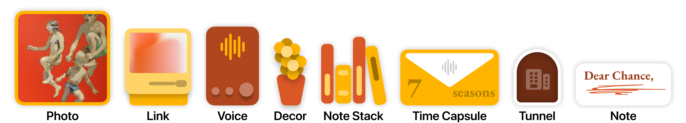

Values
Values
 Work
Work
 Audio
Audio
Shelf
A new frontier of self expression.

Furniture for your Mind.
Shelf seamlessly integrates your content with the software that organizes it. Navigate effortlessly by swiping through spaces or tapping through tunnels. Experience your ideas, mood boards, and late-night musings in vivid color and exciting new forms. And in a spatial computer, just reach for the note you're looking for.
Concept
Shelf
Home
You start with a front shelf and magic cabinet
Everything you see does something
Lock away things with time

What's inside

Design
"Home" prioritizes one key function: telling you who's free. Contact sizes distinguish between those who are free and those who are busy. For free friends, a prominent FaceTime button sits right where your fingers naturally rest.
FTF was built for those special 5-10 loved ones. And they should recieve the same fanfare as movie posters.
FTF was built for those special 5-10 loved ones. And they should recieve the same fanfare as movie posters.
A sterile landscape
Interviews and focus groups with 31 participants unveiled common obstacles to connect, including forgetfulness, limited free time, and the desire not to burden busy loved ones.
Many participants revealed that they often gave up reconnecting with friends after just four missed calls, leading to a cycle of diminishing contact, particularly when significant life changes occurred.
Many participants revealed that they often gave up reconnecting with friends after just four missed calls, leading to a cycle of diminishing contact, particularly when significant life changes occurred.
Magic Cabinet
Cabinet is everywhere, and it can add just about anything
Fallen items are accessible here
Need more space? Just add a tunnel.

Dive deeper with tunnels

Design
"Home" prioritizes one key function: telling you who's free. Contact sizes distinguish between those who are free and those who are busy. For free friends, a prominent FaceTime button sits right where your fingers naturally rest.
FTF was built for those special 5-10 loved ones. And they should recieve the same fanfare as movie posters.
FTF was built for those special 5-10 loved ones. And they should recieve the same fanfare as movie posters.
Designed for introspection
Interviews and focus groups with 31 participants unveiled common obstacles to connect, including forgetfulness, limited free time, and the desire not to burden busy loved ones.
Many participants revealed that they often gave up reconnecting with friends after just four missed calls, leading to a cycle of diminishing contact, particularly when significant life changes occurred.
Many participants revealed that they often gave up reconnecting with friends after just four missed calls, leading to a cycle of diminishing contact, particularly when significant life changes occurred.
Up close
Never lose your spot when viewing or editing
Add notes to photos or just by themselves

Search
Find what you're looking for no matter where you are
System wide search is available on every shelf

Design
FreeTime offers just the right level of customization
Apply restrictions based on location or time, or just use default controls. Plus, it seamlessly integrates with Google Calendar.
Apply restrictions based on location or time, or just use default controls. Plus, it seamlessly integrates with Google Calendar.
Thoughts everywhere
Research showed people valued spontaneous calls more than scheduled ones.
While professional solutions exist for call syncing, the experience can feel too impersonal for your most cherished relationships. Custom photos and wallpaper helps FTF stay familiar and personal.
While professional solutions exist for call syncing, the experience can feel too impersonal for your most cherished relationships. Custom photos and wallpaper helps FTF stay familiar and personal.
Make it yours
Choose your primary and secondary. They'll always pop.

In VisionOS
Shelf

Tunnels
It's okay to remix
"Great artists steal," but I like "Reduce, Reuse, Recycle."
The home interface seamlessly incorporates elements from Flighty, embraces the free-flowing horizontal swipe found in iOS app switching, mirrors the profiles seen on Apple Music album pages, draws upon the photo picker inspired by Retro, and maintains an overall aesthetic reminiscent of Home on iOS.
The home interface seamlessly incorporates elements from Flighty, embraces the free-flowing horizontal swipe found in iOS app switching, mirrors the profiles seen on Apple Music album pages, draws upon the photo picker inspired by Retro, and maintains an overall aesthetic reminiscent of Home on iOS.
A mind that renders
Every element demands power, not only from your device but also from your mind. Exercise care in what you present to the eyes.
An interface should fit the variability of people. FTF is designed for both quick, on-the-go glances and leisurely, couch-bound gazes. Each element carries intention and purpose, defending its render well.
An interface should fit the variability of people. FTF is designed for both quick, on-the-go glances and leisurely, couch-bound gazes. Each element carries intention and purpose, defending its render well.
Cabinet
Lessons Learned
It's okay to remix
"Great artists steal," but I like "Reduce, Reuse, Recycle."
The home interface seamlessly incorporates elements from Flighty, embraces the free-flowing horizontal swipe found in iOS app switching, mirrors the profiles seen on Apple Music album pages, draws upon the photo picker inspired by Retro, and maintains an overall aesthetic reminiscent of Home on iOS.
The home interface seamlessly incorporates elements from Flighty, embraces the free-flowing horizontal swipe found in iOS app switching, mirrors the profiles seen on Apple Music album pages, draws upon the photo picker inspired by Retro, and maintains an overall aesthetic reminiscent of Home on iOS.
A mind that renders
Every element demands power, not only from your device but also from your mind. Exercise care in what you present to the eyes.
An interface should fit the variability of people. FTF is designed for both quick, on-the-go glances and leisurely, couch-bound gazes. Each element carries intention and purpose, defending its render well.
An interface should fit the variability of people. FTF is designed for both quick, on-the-go glances and leisurely, couch-bound gazes. Each element carries intention and purpose, defending its render well.
It's okay to remix
"Great artists steal," but I like "Reduce, Reuse, Recycle."
The home interface seamlessly incorporates elements from Flighty, embraces the free-flowing horizontal swipe found in iOS app switching, mirrors the profiles seen on Apple Music album pages, draws upon the photo picker inspired by Retro, and maintains an overall aesthetic reminiscent of Home on iOS.
The home interface seamlessly incorporates elements from Flighty, embraces the free-flowing horizontal swipe found in iOS app switching, mirrors the profiles seen on Apple Music album pages, draws upon the photo picker inspired by Retro, and maintains an overall aesthetic reminiscent of Home on iOS.
A mind that renders
Every element demands power, not only from your device but also from your mind. Exercise care in what you present to the eyes.
An interface should fit the variability of people. FTF is designed for both quick, on-the-go glances and leisurely, couch-bound gazes. Each element carries intention and purpose, defending its render well.
An interface should fit the variability of people. FTF is designed for both quick, on-the-go glances and leisurely, couch-bound gazes. Each element carries intention and purpose, defending its render well.